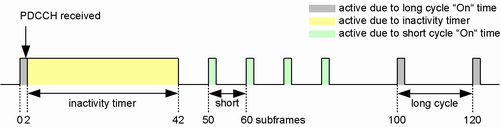
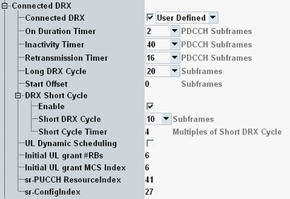

This section describes settings for discontinuous reception (DRX) of the UE during an established connection. If DRX is enabled, the UE monitors the PDCCH discontinuously and thus reduces battery consumption. The related signaling parameters are configurable and specified in 3GPP TS 36.321, section 5.7.
There are two types of DRX cycles. Long DRX cycles are mandatory while short DRX cycles are optional. Both types have a fixed length and start with a fixed "On" time during which the UE receiver is active. After the "On" time, there is an opportunity for DRX.
The following figure shows a typical example including short and long DRX cycles. The example starts with reception of a PDCCH during a long DRX cycle "On" time of two subframes. Due to this reception, the inactivity timer set to 40 subframes is started and the receiver stays on until the timer expires. In this example, no further PDCCH is received, so that the timer is not restarted.
After the timer is expired, four short DRX cycles are executed (short DRX cycle = 10 subframes, short cycle timer = 4 cycles). Finally, long DRX cycles are executed (long DRX cycle = 20 subframes).

Active MAC padding and uplink RB allocation cause PDCCH traffic and prevent DRX, see also "UL Dynamic Scheduling".
The following settings are available.

The unit "PDCCH subframe" used in this context refers to subframes with PDCCH. For FDD, all subframes are PDCCH subframes. For TDD, only DL subframes and subframes with DwPTS are counted.
Enables or disables DRX and selects a set of DRX settings.
"DRX_S" | Settings according to 3GPP TS 36.521-3, table H.3.6-1. |
"DRX_L" | Settings according to 3GPP TS 36.521-3, table H.3.6-2. |
"User-Defined" | You can configure all DRX settings. |
"On" time at the beginning of each short or long DRX cycle ("onDurationTimer").
Remote command:"On" time after reception and decoding of a PDCCH for this UE ("drx-InactivityTimer").
Remote command:"On" time if the UE expects a DL retransmission ("drx-RetransmissionTimer"). The timer expires early when the retransmission is received.
Remote command:Duration of one long DRX cycle ("longDRX-Cycle").
If short DRX cycles are enabled, the long DRX cycle duration is always divisible by the short DRX cycle duration. Enabling short DRX cycles or modifying the short DRX cycle duration modifies also the long DRX cycle duration, so that it is compatible.
The highest values 5120 and 10240 are only available if eDRX is enabled, see "eDRX".
Remote command:Offset shifting all short and long DRX cycles ("drxStartOffset").
Remote command:The following settings configure optional short DRX cycles.
Enables short DRX cycles.
For eMTC, short DRX cycles are disabled.
Remote command:Duration of one short DRX cycle ("shortDRX-Cycle").
The long DRX cycle duration is always divisible by the short DRX cycle duration and adapted automatically to this setting (if short cycles are enabled).
Remote command:Number of short DRX cycles to be processed ("drxShortCycleTimer"), for example after the inactivity timer has expired.
Remote command:With uplink dynamic scheduling, the UE gets uplink grants only upon request. Furthermore, MAC padding is disabled automatically.
Enable dynamic scheduling to force DRX, but allow the UE to get an UL grant upon request.
If you want to force DRX without allowing any uplink grants, disable dynamic scheduling, set the number of UL RBs to zero and disable MAC padding.
If connected DRX is disabled, the "UL Dynamic Scheduling" parameter has no effect. For scheduling type SPS, "UL Dynamic Scheduling" is disabled.
Remote command:The two settings are only relevant for UL dynamic scheduling. They configure the initial UL grant that the UE gets after a request. Subsequent UL grants are configured automatically, depending on how much data the UE still wants to send. For the first UL grant, this information is not available at the eNodeB.
Remote command:Defines which PUCCH resource the UE must use for scheduling requests, see nPUCCH,SRI in 3GPP TS 36.213, section 10.1.5.
Remote command:Defines how often and when the UE must send scheduling requests via the PUCCH. The effect of the individual SR configuration index values is specified in 3GPP TS 36.213, section 10.1.5.
Remote command: